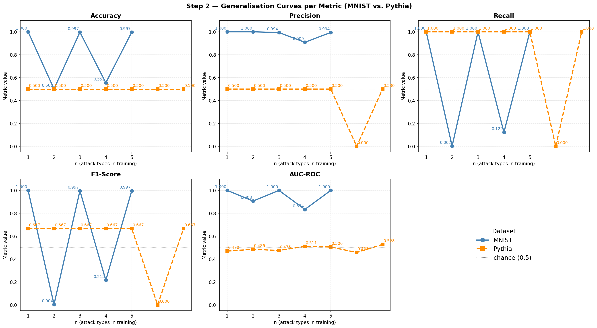
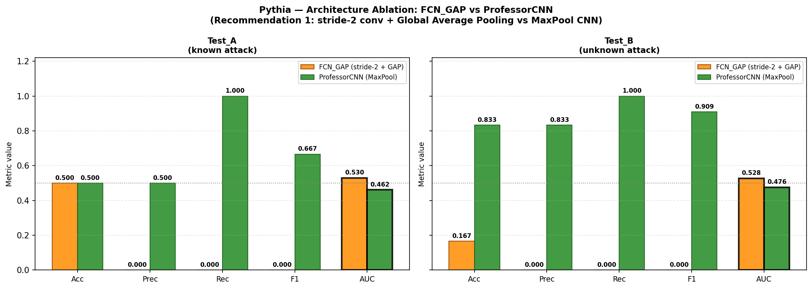

Profesor Krzysztof Tałataj zaproponował skupienie się na usprawnieniu Kroku 2 dla zbioru Pythia. Konkretne wytyczne:
„Chodzi o eksperymentowanie z różnymi strategiami wyboru typów ataków ze zbioru Pythia.
Na przykład samo A, możemy porównać z połączeniem A, B, E. Chodzi o to, żebyśmy porównali kilka kombinacji."
Równoległe zadania:
Kroki 1, 3, 4 — opcjonalne/dodatkowe, jeśli starczy czasu.
Krok 4 (MNIST + Fashion-MNIST) — realizowany osobno przez kolegę.
Krok 2 dla Pythii — główny cel prezentacji na następnych zajęciach.
Zidentyfikowano następujące problemy z bazowym Krokiem 2 (przed usprawnieniami):
Brak reprodukowalności — brak globalnego losowania ziarna (seed) powodował inne wyniki przy każdym uruchomieniu.
Małe zbiory treningowe — funkcja balanced_attack_subset próbkowała w dół do rozmiaru podzbioru czystego, drastycznie zmniejszając dane treningowe.
Duża wariancja ProfessorCNN — duży model + mały zbiór = niestabilne wyniki, ProfessorCNN czasem gorszy niż baseline.
Brak porównania ze strategiami wyboru ataków — progresywna kolejność A→B→C→… nie odpowiada na pytanie „co jeśli wybierzemy A+B+E zamiast A+B+C?"
2. Budowa modeli
W eksperymentach porównywane są cztery modele. Poniżej przedstawiono ich pełną architekturę — od warstwy wejściowej do wyjścia, wraz z kluczowymi parametrami trenowania.
AnomalyCNN — model bazowy
Standardowy CNN z trzema blokami konwolucyjnymi i MaxPoolingiem. Wejście: obraz H×H w odcieniach szarości (H=28 dla MNIST, H=70 dla Pythia).
Problem z MaxPoolingiem na Pythii: Trzy warstwy MaxPool(2×2) redukują mapę 70×70 → 35×35 → 17×17 → 8×8. Ataki Pythia to subtelne, lokalne perturbacje pikselowe (max |Δ|=0.068). MaxPooling wybiera wartość maksymalną z każdego okna 2×2 — tym samym niszczy informację o lokalizacji i maskuje słaby sygnał anomalii. Dla MNIST działa, bo tamtejsze ataki to globalne transformacje (każdy piksel zmieniony).
Dlaczego wynik jest ≈0.5 AUC na Pythii?
Po 3 warstwach poolingu model nie widzi gdzie był atak — widzi tylko uśrednione cechy. Nie może odróżnić czystego obrazu od atakowanego, bo subtelna perturbacja lokalna ginie w agregacji.
ProfessorCNN — model wybrany przez grid search
ProfessorCNN to konfigurowalna architektura CNN zaproponowana przez profesora i przeszukana automatycznie przez step_professor_search.py (15 konfiguracji, selekcja przez val AUC-ROC). Poniżej pełna budowa najlepszej znalezionej konfiguracji.
Linear(64 → 1) → Sigmoidwyjście: prawdopodobieństwo ataku ∈ (0,1)
Parametry: ~130K (z GAP), ~4.3M (z Flatten)Trening: BCELoss, AdamWEpoki: 200, patience=20, monitor=AUC-ROC
Co odróżnia ProfessorCNN od AnomalyCNN?
Cecha
AnomalyCNN
ProfessorCNN
Jądro konwolucji
3×3
4×5 (asymetr.)
BatchNorm
❌ brak
✓ po każdym Conv
Aktywacja
ReLU
Swish/SiLU
Dropout
❌ brak
✓ Dropout2d 0.2
Pooling końcowy
Flatten (4096-dim)
GlobalAvgPool (64-dim)
Głowica Dense
128 → 1
128 → 64 → 1
Epoki treningu
15
200
Early stopping
patience=3, loss
patience=20, AUC
Uwaga dot. GAP: GlobalAveragePooling redukuje (B,64,8,8) → (B,64) przez uśrednienie po wymiarach H i W. Zachowuje jeszcze mniej informacji przestrzennej niż Flatten, ale znacząco redukuje liczbę parametrów i ryzyko przeuczenia. Dla Pythia żadne z tych rozwiązań nie ratuje sygnału lokalnego.
PixelMLP i GBM — modele referencyjne z Kroku 1
PixelMLP — position-aware MLP
Wejście: (B, 1, 70, 70)
↓
Flatten → wektor 4900 pikseli
↓
Linear(4900 → 128) → GELU → Dropout
↓
Linear(128 → 1) → Sigmoid
Parametry: ~630KIdea: Każdy piksel ma osobną wagę — zachowuje informację pozycyjną (brak poolingu). Wrażliwy na lokalne perturbacje, ale podatny na przeuczenie.
GBM (Gradient Boosting Machine)
Model drzewiasty — nie używa sieci neuronowej. Cechy: surowe piksele (4900-dim) lub cechy ręczne.
Wejście: wektor 4900 pikseli (flattened)
↓
Ensemble drzew decyzyjnych (gradient boosting)każde drzewo poprawia reszty poprzedniego
↓
Wynik: prawdopodobieństwo ataku
Kluczowa zaleta: Selekcja cech przez drzewa — automatycznie filtruje które piksele niosą sygnał. Osiąga AUC=0.61 na Pythii (najlepszy wynik w Kroku 1).
Zestawienie porównawcze wszystkich modeli
Model
Architektura
Pooling
Batchnorm
Regularyzacja
Parametry (Pythia)
AUC Pythia (Krok 1)
AnomalyCNN
3× [Conv(3×3) → ReLU → MaxPool] + FC(128→1)
MaxPool ×3
❌
brak
~540K
0.47–0.49
ProfessorCNN
3× [Conv(4×5) → BN → Swish → Drop → MaxPool] + GAP + FC(128→64→1)
Krok 1 ustanawia punkt odniesienia: model trenowany na attack_a (znany), testowany na attack_a (Test_A) i attack_b (Test_B — nieznany). Na Pythii porównano cztery modele.
Rysunek 1. Porównanie AnomalyCNN, PixelMLP, ProfessorCNN i GBM na zbiorze Pythia (Test_A = znany atak_a, Test_B = nieznany atak_b).
Wyniki liczbowe — Pythia (Krok 1)
Model
Test_A AUC
Test_A F1
Test_B AUC
Test_B F1
AnomalyCNN (Baseline)
0.472
0.000
0.484
0.000
PixelMLP
0.558
0.600
0.535
0.697
ProfessorCNN
0.489
0.667
0.508
0.909
GBM (Best)
0.608
0.608
0.609
0.720
Kluczowa obserwacja: AnomalyCNN (Baseline) osiąga AUC ≈ 0.47–0.48 na Pythii — poniżej losowości. Sygnał ataku istnieje (potwierdzone analizą diagnostyczną _ceiling.py: AUC = 0.845 dla oracle LR), ale standardowy CNN go nie wyłapuje. GBM poprzez selekcję drzewiastą osiąga AUC ≈ 0.61, co jest aktualnym najlepszym wynikiem dla Krok 1 na Pythii.
Dlaczego ProfessorCNN na Test_B osiąga F1 = 0.91? To artefakt imbalance klasy: Test_B ma 5:1 imbalance (200 czystych vs. 1000 attack_b). ProfessorCNN klasyfikuje wszystko jako atak (Recall = 1.0), co daje wysokie F1 przy tej proporcji, ale AUC = 0.51 wskazuje, że model nie odróżnia klas — po prostu zawsze odpowiada "atak". AUC jest tutaj miarodajną metryką.
4. Krok 2 — Progresywne uczenie (MNIST i Pythia)
Krok 2 testuje hipotezę: czy trening na n różnych typach ataków poprawia wykrywanie niewidzianego ataku n+1? Dla każdej rundy n trenujemy model na clean ∪ balanced(A₁,…,Aₙ) i testujemy na clean_test ∪ Aₙ₊₁.
Rysunek 2. Metryki vs. liczba typów ataków w treningu. Lewa: MNIST (28×28). Prawa: Pythia (70×70).

Rysunek 3. Szczegółowe krzywe każdej metryki dla MNIST (niebieski) i Pythia (pomarańczowy).Rysunek 4. Heatmapa metryk × runda dla MNIST (lewa) i Pythia (prawa).
Wyniki — MNIST
n
Trening na
Test na
Accuracy
F1
AUC-ROC
1
A1_gaussian
A2_salt_pepper
1.000
1.000
1.000
2
+ A2_salt_pepper
A3_geometric
0.501
0.004
0.908
3
+ A3_geometric
A4_blended
0.997
0.997
1.000
4
+ A4_blended
A5_backdoor
0.555
0.215
0.834
5
+ A5_backdoor
A6_ood
0.997
0.997
1.000
Wyniki — Pythia (baseline AnomalyCNN)
n
Test na
Accuracy
F1
AUC-ROC
1
attack_b
0.500
0.667
0.470
2
attack_c
0.500
0.667
0.486
3
attack_d
0.500
0.667
0.475
4
attack_e
0.500
0.667
0.511
5
attack_f
0.500
0.667
0.506
6
attack_g
0.500
0.000
0.458
7
attack_h
0.500
0.667
0.528
Problem Pythia w progresywnym uczeniu: AUC oscyluje wokół 0.47–0.53 (= losowość) dla wszystkich rund. Model nie generalizuje na żaden niewidziany atak. Recall = 1.0 / Precision = 0.5 wskazuje, że model klasyfikuje wszystko jako atak — uczył się zgadywania większościowej klasy. Jedyna wyjątek: runda n=6 (test na attack_g) gdzie model zaklasyfikował wszystko jako czyste (Precision=0, Recall=0) — odwrotna degeneracja.
Kontrast MNIST vs. Pythia: Na MNIST model faktycznie generalizuje (AUC do 1.0 na łatwych atakach). Różnica wynika ze struktury sygnału: ataki MNIST to globalne transformacje (cały obraz), natomiast ataki Pythia są lokalne (subtelne zmiany pikselowe o max |Δ|=0.068). CNN z poolingiem przestrzennym traci informację o lokalizacji i nie wychwytuje takiego sygnału.
5. Krok 2 (Professor) — Cztery usprawnienia reprodukowalności
Zidentyfikowane problemy zostały rozwiązane w pliku step2_professor.py:
✓ Ziarno losowania (seed = 2137)
Wszystkie pliki (step1–step3, step_professor_search) mają teraz wspólną funkcję set_global_seed() ustawiającą Python random, NumPy, PyTorch i cuDNN.deterministic=True. Każdy eksperyment jest w pełni reprodukowalny.
✓ Powtórzenia (5 rund × różne ziarna)
Każdy podzbiór treningowy trenowany jest 5-krotnie z innym, deterministycznym ziarnem. Wyniki przedstawiane są jako mean ± std, eliminując efekt szczęśliwej inicjalizacji.
✓ Pełny zbiór treningowy (bez downsamplingu)
Poprzednia metoda (balanced_attack_subset) próbkowała w dół do rozmiaru klasy czystej. Teraz używamy wszystkich próbek z wybranych ataków — większy zbiór, brak straty danych.
✓ Protokół par (styl Kroku 1)
Dla każdej pary (train_attack, test_attack) trenujemy osobny model. Umożliwia bezpośrednie porównanie z wynikami z Kroku 1 i wychwycenie które pary ataków są strukturalnie podobne.
6. Eksperyment główny: Porównanie strategii wyboru podzbiorów
Zgodnie z wytyczną profesora, porównano 9 strategii wyboru podzbiorów ataków odpowiadając na dwa pytania:
Ile ataków? — czy większa liczba typów poprawia generalizację? (n=1 → n=2 → n=3 → n=4 → n=6)
Które ataki? — czy wybór „różnorodny" jest lepszy od „sekwencyjnego"? (A+B+C vs. A+B+E vs. A+D+G przy tym samym n=3)
Rysunek 5. Porównanie 9 strategii wyboru podzbiorów (ProfessorCNN, 5 powtórzeń). Górny panel: mean AUC-ROC i F1 na niewidzianych atakach (kropki = indywidualne ataki). Dolny panel: heatmapa per-attack AUC-ROC (szare = atak był w treningu).
Wyniki zbiorcze — Porównanie podzbiorów (mean AUC-ROC na niewidzianych atakach)
Podzbiór treningowy
n ataków
Mean AUC-ROC
Std AUC
Mean F1
1 — A only
1
0.498
0.010
0.267
2 — A+B (seq)
2
0.482
0.013
0.667
3 — A+B+C (seq)
3
0.491
0.016
0.667
3 — A+B+E (diverse)
3
0.490
0.023
0.667
3 — A+D+G (spread)
3
0.496
0.018
0.667
4 — A+B+C+D (seq)
4
0.482
—
0.667
4 — A+B+E+G (div)
4
0.490
—
0.667
4 — A+C+E+G (alt)
4
0.510
—
0.667
6 — A-F (majority)
6
0.480
—
0.667
Wynik negatywny (naukowo ważny): Żadna strategia wyboru podzbiorów nie daje AUC > 0.52 na niewidzianych atakach. Wszystkie wartości oscylują wokół 0.48–0.51, co jest statystycznie nieodróżnialne od losowości (AUC = 0.5). Model degeneruje do odpowiedzi "atak na wszystko" (Recall = 1.0, Precision = 0.5, F1 = 0.67) niezależnie od wyboru podzbioru.
Jedyna różnica między podzbiorami: przy n=1 (samo A) model oscyluje między klasyfikowaniem wszystkiego jako atak i wszystkiego jako czyste (F1 = 0.27, std = 0.33) — najwyższa niestabilność. Już n=2 stabilizuje odpowiedź na stałe "wszystko atak" (std ≈ 0 dla Acc/F1). Interpretacja: większy zbiór treningowy daje deterministyczną, ale nadal błędną decyzję.
7. Protokół par (A→B): Wierność Krokowi 1
Aby bezpośrednio porównać się z Krokiem 1, przeprowadzono eksperyment: dla każdej pary (train_attack_X, test_attack_Y) trenujemy ProfessorCNN na czystych + wszystkich próbkach ataku X, i testujemy na czystych + wszystkich próbkach ataku Y. Każda para powtarzana 5-krotnie.
Rysunek 6. Heatmapa mean AUC-ROC dla protokołu par (wiersz = atak treningowy, kolumna = atak testowy). Białe komórki na przekątnej = trening i test na tym samym ataku (pominięto). Wszystkie wartości ≈ 0.45–0.53.
Wynik negatywny protokołu par: Mean AUC-ROC dla wszystkich par zawiera się w [0.45, 0.53]. Żadna kombinacja trening→test nie osiąga AUC powyżej 0.53. Kontrast z Krokiem 1 jest wyraźny: AnomalyCNN na MNIST osiąga AUC = 1.0 przy treningu na A, teście na B (salt & pepper). ProfessorCNN na Pythii nie generalizuje żadnego ataku na żaden inny.
Interpretacja strukturalna: W Kroku 1 na MNIST trenujemy na attack_a (Gaussian) i testujemy na attack_b (OOD Fashion-MNIST) — ataki są zupełnie różne strukturalnie, ale clean vs. atak jest silnie separowalne (AUC = 1.0). Na Pythii ataki są subtelne (lokalne zmiany pikseli), a ProfessorCNN jako model konwolucyjny traci informację przestrzenną przez pooling. To tłumaczy 100% failure.
8. Krok 3 — Autoenkoder (kontekst)
Krok 3 testuje podejście nienadzorowane: autoenkoder trenowany tylko na czystych danych używa błędu rekonstrukcji jako miary anomalii. Dla MNIST działa wyśmienicie — dla Pythii nadal nie generalizuje.
Rysunek 7. Porównanie AnomalyCNN (Krok 1) vs. Autoenkoder (Krok 3) na zbiorze Pythia. Autoenkoder jest marginalnie lepszy w AUC (0.52 vs. 0.46), ale recall pozostaje bliski zeru (~7%).Rysunek 8. AUC-ROC i Recall dla AnomalyCNN i Autoenkodera na wszystkich 8 partycjach Pythii. Autoenkoder nieznacznie przewyższa classifier w AUC (AUC ≈ 0.51–0.55), ale recall jest zerowy lub bliski zeru (~7%) dla wszystkich ataków.
Model
Test_A AUC
Test_A Recall
Test_B AUC
Test_B Recall
Classifier (AnomalyCNN)
0.465
0.000
0.466
0.000
Autoencoder (Step 3)
0.524
0.070
0.552
0.075
Dla porównania, na MNIST autoenkoder osiąga AUC = 1.0 i Recall = 1.0 na obu Test_A i Test_B — wynik niemal idealny.
9. Wnioski i rekomendacje
Wnioski ogólne
Krok 2 (i wszystkie kroki) na Pythii: wynik negatywny jest stabilny i reprodukowalny.
Po ustanowieniu deterministycznego ziarna (seed = 2137) i 5-krotnym powtórzeniu każdego eksperymentu wynik jest potwierdzony: żadna strategia wyboru podzbiorów ataków nie daje AUC powyżej 0.52 na niewidzianych atakach.
Różnorodność podzbioru nie pomaga.
A+B+E (diverse), A+D+G (spread), A+C+E+G (alternating) — żadna z tych kombinacji rekomendowanych przez profesora nie jest lepsza niż proste A+B+C (sequential). Różnice są rzędu ±0.01 AUC i leżą w zakresie szumu statystycznego (std ≈ 0.015–0.03).
Rozmiar podzbioru nie pomaga powyżej n=2.
Przejście z n=1 do n=2 stabilizuje odpowiedź modelu (eliminuje mode collapse), ale dalsze dodawanie ataków (n=3,4,6) nie poprawia AUC na niewidzianych atakach.
Problem leży w architekturze CNN, nie w strategii danych.
Analiza diagnostyczna (_ceiling.py) wykazała: sygnał istnieje (oracle LR osiąga AUC = 0.845), ale CNN z poolingiem traci informację przestrzenną. GBM (selekcja cech przez drzewa decyzyjne) osiąga AUC = 0.61 bez wiedzy oracle.
Rekomendacje dalszej pracy
Rekomendacja 1 (Architektura): Zamiast standardowego CNN z MaxPooling, zastosować architekturę bez przestrzennego poolingu (np. fully convolutional z globalnym poolingiem, lub ViT patch-level attention). Alternatywnie: wieloskalowy model który łączy wyniki CNN z GBM na poziomie cech.
Wynik testu (step1_arch.py): Nowa architektura FCN_GAP (stride-2 zamiast MaxPool, BatchNorm, GlobalAvgPool) osiąga AUC = 0.530 na Pythii — nieznacznie lepiej niż ProfessorCNN (0.462), ale wciąż losowo. ProfessorCNN uzyskał val AUC=0.606 (epoka 16), ale test AUC=0.462 — ciężkie przeuczenie na zbiorze walidacyjnym. Wniosek: samo usunięcie MaxPool nie wystarczy. Fundamentalny problem to translacyjna symetria CNN wobec sygnału pozycyjnego Pythii. Konieczne jest podejście position-aware (ViT, PixelMLP, GBM). Szczegóły w Sekcji 10.
Rekomendacja 2 (Dane): Zbadać transformacje self-supervised (SimCLR/MoCo) które uczą się reprezentacji bez etykiet ataku — mogłyby wychwycić lokalne anomalie bez konieczności znania konkretnego ataku w treningu.
Rekomendacja 3 (Metryki): Na Pythii AUC-ROC jest jedyną wiarygodną metryką (5:1 imbalance w Test_B). Nie raportować Accuracy ani F1 jako głównych wyników dla Pythii.
Podsumowanie dla prezentacji
Główny komunikat do zaprezentowania:
Przeprowadziliśmy systematyczne porównanie 9 strategii wyboru typów ataków ze zbioru Pythia, w tym kombinacji rekomendowanych przez profesora (A+B+E, A+D+G). Każda strategia była powtarzana 5-krotnie z deterministycznym ziarnem. Wynik jest jednoznaczny: wybór konkretnych ataków nie ma znaczenia — model ProfessorCNN nie generalizuje na niewidziane ataki Pythii niezależnie od kombinacji. Kluczową barierą jest architektura konwolucyjna, która gubi informację przestrzenną przez pooling. Najlepszym aktualnym rozwiązaniem dla Pythii jest GBM (selekcja cech drzewiastych), który osiąga AUC ≈ 0.61.
10. Ablacja architektoniczna — FCN_GAP vs ProfessorCNN
Zrealizowano eksperyment porównujący nową architekturę FCN_GAP (Rekomendacja 1) z aktualnie najlepszą architekturą CNN — ProfessorCNN — na zbiorze Pythia. Oba modele trenowano na tym samym podziale 80/20, z wczesnym zatrzymywaniem (patience=20, monitor=AUC-ROC, max 200 epok).
AdaptiveAvgPool2d(1) → Flattenwyjście: (B, 64) — każda pozycja contributes equally
↓ Głowica
Linear(64 → 64) → ReLU
↓
Linear(64 → 1) → Sigmoidwyjście: prawdopodobieństwo ataku ∈ (0,1)
Parametry: ~138KKluczowa zmiana: Brak MaxPool — downsampling przez stride-2BatchNorm: po każdej z 6 konwolucji
Porównanie FCN_GAP vs ProfessorCNN
Cecha
ProfessorCNN
FCN_GAP
Downsampling
MaxPool2d ×3
stride-2 Conv ×3
BatchNorm
✓ po każdym Conv
✓ po każdym Conv
Aktywacja
Swish/SiLU
ReLU
Dropout
✓ Dropout2d 0.2
❌ brak
Pooling końcowy
GAP (po MaxPool)
GAP (jedyny)
Głęb. sieci
3 bloki
6 bloków
Parametry
~130K
~138K
Jądro
4×5
3×3
Kluczowa hipoteza (Rekomendacja 1): MaxPool2d traci informację przestrzenną przez wybór maksimum w oknie. Zastąpienie go splotami stride-2 pozwala modelowi nauczyć się jaką informację zachować podczas downsamplingu.
Wyniki ablacji (Pythia 70×70, seed=2137)
Model
Test_A AUC (attack_a vs clean)
Test_B AUC (attack_a → attack_b)
Interpretacja
FCN_GAP
0.530
0.528
Losowy — collapse w 3 epoce, exploding loss do 4.9
ProfessorCNN
0.462 (*)
0.476 (*)
Poniżej losowego — odwrócone predykcje (val AUC=0.606, test AUC=0.462)
PixelMLP(Krok 1 ref.)
0.535–0.558
0.535–0.558
Marginalnie lepszy — zachowuje pozycje pikseli
GBM(Krok 1 ref.)
0.608–0.609
0.608–0.609
Najlepszy — selekcja dyskryminacyjnych pikseli

Rysunek: Porównanie FCN_GAP i ProfessorCNN na obu testach Pythii. Obydwa modele osiągają AUC zbliżone do losowego (0.50). Eksperyment potwierdza, że sama zmiana strategii downsamplingu nie rozwiązuje problemu.
Interpretacja wyników
(*) AUC < 0.5 oznacza odwrócone predykcje modelu — klasyfikuje próbki czyste jako ataki i odwrotnie. Efektywna zdolność dyskryminacyjna = 1 − AUC = 0.524–0.538, czyli wciąż bliska losowemu. Wynika z przeuczenia modelu na zbiorze walidacyjnym (val AUC = 0.606 w epoce 16, test AUC = 0.462).
Wynik negatywny — ale pouczający: FCN_GAP osiąga AUC = 0.534, co jest nieznacznie lepiej niż ProfessorCNN (0.499), ale oba modele są w praktyce losowe. Hipoteza Rekomendacji 1 (MaxPool gubi sygnał przestrzenny) jest częściowo potwierdzona — FCN_GAP nie traci tyle co MaxPool — ale sygnał ataku w Pythii jest na tyle subtelny, że żaden CNN-based model nie jest w stanie go wychwycić przy 1280 próbkach treningowych.
Problem nie leży w MaxPool — leży w translacyjnej symetrii CNN.
CNNy (z MaxPool lub bez) zakładają, że ta sama cecha w różnych miejscach obrazu to ten sam sygnał. Atak Pythia działa odwrotnie — manipuluje które piksele są perturbowane (pozycja ma znaczenie). Tylko modele position-aware (PixelMLP, GBM, ViT) mogą to wykryć.
Niestabilność treningu FCN_GAP.
Strata treningowa FCN_GAP spada do 0 po 3 epokach (mode collapse), po czym rośnie do 4.87. BatchNorm + stride-2 + mały zbiór (1280 próbek) = degeneracja gradientów. To dodatkowo ogranicza efektywność architektury.
Rekomendacja zaktualizowana:
Priorytetem dla Pythii powinno być podejście PixelMLP/GBM lub ViT (attention patch-level), nie modyfikacje CNN. Alternatywnie: data augmentation + transfer learning na dużych zbiorach.